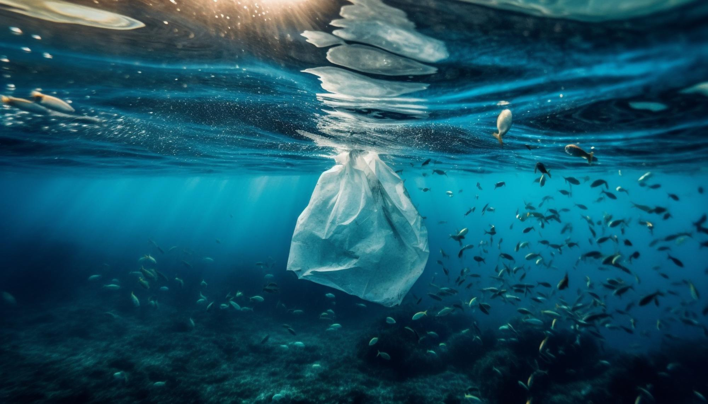
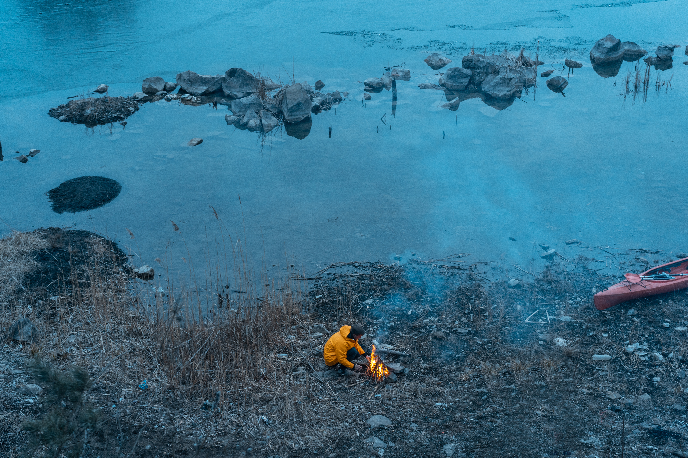

"Navigating the Depths: Understanding the Impact of Sea Pollution"
The world's oceans, once thought to be vast and resilient, now face an existential threat from human-induced pollution. From industrial runoff to plastic waste, the detrimental effects of sea pollution reverberate throughout marine ecosystems, endangering delicate ecosystems and marine life. In this exploration, we delve into the intricate web of sea pollution, uncovering its far-reaching consequences and the urgent need for concerted action to mitigate its impact and preserve the health of our oceans.

The Menace of Sea Pollution
Sea pollution, a pervasive environmental issue, poses a significant threat to the delicate balance of marine ecosystems worldwide. Human activities such as industrial waste discharge, oil spills, and improper disposal of plastic waste contribute to the degradation of marine environments. These pollutants not only contaminate the water but also endanger marine life, disrupting food chains and habitats. The consequences of sea pollution extend beyond aquatic ecosystems, affecting coastal communities reliant on marine resources for sustenance and livelihoods. Additionally, pollutants can accumulate in seafood consumed by humans, posing health risks and perpetuating the cycle of environmental degradation.

Addressing the Crisis: Combating Sea Pollution
Efforts to combat sea pollution are crucial for safeguarding the health and integrity of oceans and seas. Implementation of stringent regulations and enforcement mechanisms to limit industrial waste discharge and mitigate oil spills is imperative. Moreover, promoting public awareness and education regarding responsible waste management practices, such as recycling and proper disposal of plastic waste, can help reduce the volume of pollutants entering marine environments. Collaborative initiatives involving governments, industries, and communities are essential to address the root causes of sea pollution and foster sustainable solutions for marine conservation.

Towards a Sustainable Future: Innovations in Marine Conservation
Despite ongoing conservation efforts, the magnitude of sea pollution remains a formidable challenge that requires collective action and innovation. Research into advanced technologies for waste treatment and remediation, as well as the development of biodegradable alternatives to conventional plastics, holds promise for mitigating the impact of pollution on marine ecosystems. Furthermore, fostering international cooperation and partnerships is essential for implementing comprehensive strategies to tackle sea pollution on a global scale. By prioritizing the preservation of marine environments and adopting proactive measures to combat pollution, humanity can strive towards a healthier and more sustainable future for our oceans and seas.